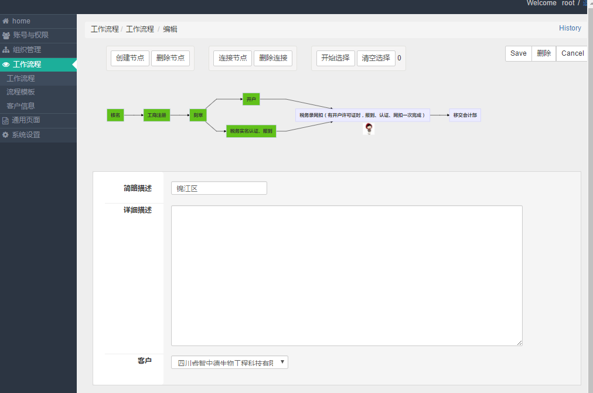
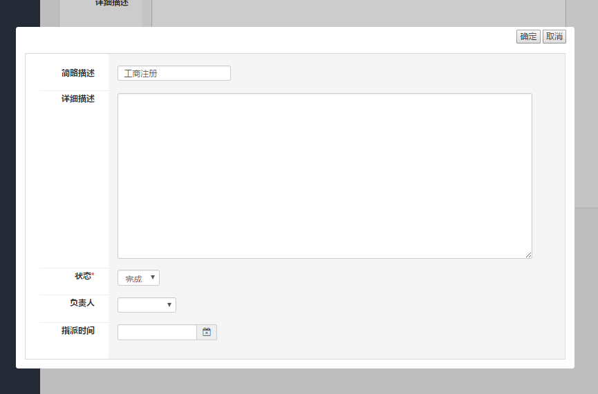

4. 流程图编辑¶
4.2. 流程图编辑¶
流程图创建后，其没有任何内容，需要继续编辑，填入工作节点和其他内容。点击流程图ID，进入流程图编辑。

流程编辑截图
见 流程编辑截图 下方，可编辑的属性包括
- 简短描述：用少量文字概括该流程图，将显示在流程图列表页面中。
- 详细描述：管理员记录备注，员工完成情况等都可以记录在该项中。
- 客户：选择客户，客户创建见。
4.3. 流程图节点关系¶
流程编辑截图 上部分，有一排按钮，用于创建节点及其链接关系。
- 创建节点
- 点击按钮即可创建一个空节点，这时节点只是显示其在后端数据库的ID号。
- 创建节点链接
- 确保“开始选择”按钮处于激活状态
- 选择两个节点。（如果选择多于两个，则最先选择的两个生效。）
- 点击“连接节点”，即可按照选择节点先后顺序，生成连接关系。
- 删除节点
- 点击“删除节点”按钮会删除节点及其对应连接。
- 删除连接
- 确保“开始选择”按钮处于激活状态
- 选择需要删除连接相关的节点
- 点击“删除连接”，将会删除选中节点间的连接。
注解
编辑完节点连接信息后，必须点击 流程编辑截图 右上角的“Save”按钮进行保存，否则这些节点关系不会保存。
4.4. 编辑节点属性¶
点击节点会弹出节点属性编辑框。
- 简短描述：用少量文字概括该节点内容，将显示在流程图中。
- 详细描述：管理员记录备注，员工完成情况等都可以记录在该项中。
- 状态：如果负责人完成了该项工作，需要自己将该状态设置为 完成 状态。
- 负责人：工作节点的负责人，负责人的头像会显示在工作流程中。
- 启动时间： 每个工作节点都可以设置启动时间，该时间用于提醒管理员或者员工。还可以作为条件搜索工作节点。

节点编辑截图
编辑完成后，点击右上角的“确定”按钮，进行保存。